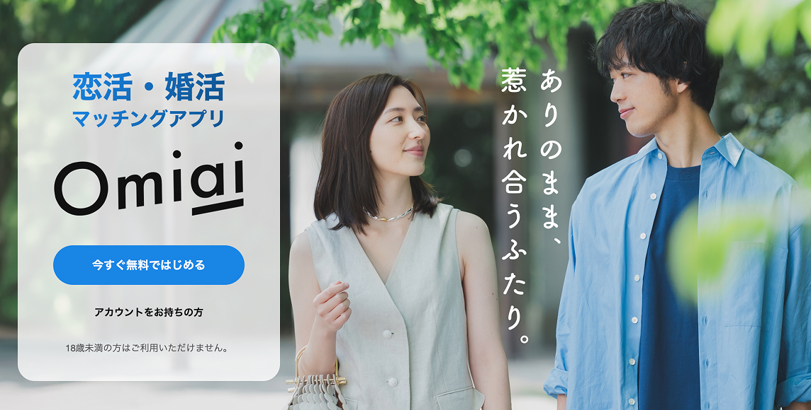

iSEEK（アイシーク） - 石川県在住者専用アプリ

| 目的 | 恋活・婚活・地域交流 |
|---|---|
| 対象 | 石川県在住者限定（19歳以上） |
| 特徴 | 石川専用に設計されたマッチングアプリ。県内の出会いを前提としており、登録時に公的身分証明書による年齢確認が必須。 |
おすすめポイント
- 石川在住者専用なので、「マッチングしたけど遠くて会えない」というミスマッチがない。
- 「WISHエッセンス」で価値観や性格が合う人を探しやすい。
- 金沢市・小松・白山・能登まで、県内の相手だけに絞って探せる。
更新日：2026年9月18日
石川県で40代の恋活・婚活は十分にチャンスがあります。
ただし20代の頃と違い、「出会いの場を自分で設計する」ことが重要です。
一人一台が基本の完全な車社会で、金沢市中心部以外は自家用車での移動が必須です。隣接する市への移動にも車で30分から1時間程度かかるため、行動範囲の広さが交際の鍵になります。
このページでは、流れに合わせて、石川版のアプリ選定・支援制度・デートスポット（実在店）までまとめます。
まずはアプリを整理します。
| 目的 | 恋活・婚活・地域交流 |
|---|---|
| 対象 | 石川県在住者限定（19歳以上） |
| 特徴 | 石川専用に設計されたマッチングアプリ。県内の出会いを前提としており、登録時に公的身分証明書による年齢確認が必須。 |
※「どれが絶対」ではなく、目的で使い分け が最短です。
まず母数を取りに行くならこれ。40代の会員数も多く、趣味・価値観でつながれるコミュニティ機能が充実しています。

婚活寄りの空気感を好む人に。真剣度が高く、落ち着いた出会いを求める層が多いのが特徴です。

結婚を意識した層が多い。成婚実績も豊富で、40代の婚活には外せない選択肢です。

再婚/子持ち理解の設計がある。同じ境遇の人と出会いやすく、応援プログラムなども充実しています。
普通にやると負けるポイントを潰してから挑みましょう。
スマートフォンでお相手の検索やお見合いの申し込みができる、県主導の1対1マッチングシステムです。利用登録料は10,000円（2年間有効）。お見合いの際は、担当マッチングサポーターの交通費として1,000円がかかります。
県内の縁結びイベント・セミナーの最新情報は、結婚支援ポータルのイベント一覧で確認できます。
小松市社会福祉協議会が運営する結婚相談所。毎週土曜日の13時30分〜15時30分に、相談員が結婚相談やマッチングを行っています（利用条件は公式で確認）。
体験型の婚活イベントや、男性向けのコミュニケーション・身だしなみセミナーなどを実施しています。開催状況は公式で確認してください。
開催頻度が高く、条件検索もしやすいので併用推奨。※開催状況は必ず公式リンクから最新情報を確認。
金沢市・白山市を中心に、安心で会話が弾みやすいスポットを厳選しました。
武蔵ヶ辻（近江町市場近く）。上質なフルーツパフェが有名で、スイーツ好きのお相手なら確実に喜ばれ、明るい雰囲気で緊張も和らぎます。
出羽町（石川県立美術館内）。美術館併設の落ち着いた空間は40代の大人デートにふさわしく、洗練されたケーキが会話を弾ませます。
東山（ひがし茶屋街）。茶屋街の2階席で街並みを見下ろしながら、静かに落ち着いて話せます。
十間町（近江町市場近く）。自家焙煎の本格コーヒーと静かでレトロな店内が、深い話をしたい2回目のデートに最適です。
八幡町（白山比咩神社近く）。木のぬくもりを感じる空間で、ドライブデートや神社参拝のランチ・カフェ利用にぴったりです。
宮永町。こだわりのコーヒー豆を扱う本格派のお店で、落ち着いた大人の時間を過ごすことができます。
夜は長居しすぎず、帰りの交通手段（代行・タクシー・バス）を先に決めておくと安心です。
迷ったら、まずは「会うまでのハードルが低い設計」に寄せるのが勝ち筋です。